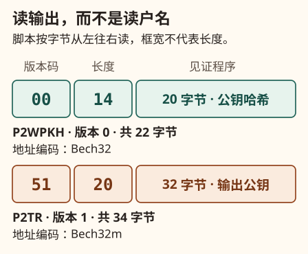
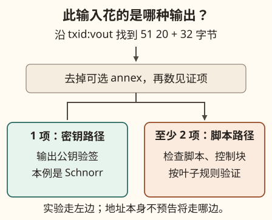

本页目录
| 奖励 | 这次转出要交什么 |
|---|---|
| 甲 · 50 BTC | 出示一把和原记录匹配的公钥，还要用对应的私钥给这笔转账签名。 |
| 乙 · 50 BTC | 原记录已经写了验签用的公钥。这次用对应的私钥签名即可，不必再交公钥。 |
同事能转走哪一笔？ 两笔都不能。公钥是给别人核对签名用的，可以公开；私钥才是生成签名的秘密。收款地址告诉别人怎样付给这个钱包，并不会把签名权给知道地址的人。乙行省掉的是「再交公钥」，不是「签名」。
只改签名权。 假如同事现在确实能让这个钱包给两笔转账签名，工单其他条件不变，能申请花费哪一笔？两笔都能：甲交匹配的公钥和签名，乙按本单的方式只交签名。但「能签」还不是「已转走」：要勾选「已归集」，得找到实际花了这两笔奖励、付到归集地址的交易。我们知道两笔来自同一钱包，是因为有钱包的记录；两种要求里都没有客户姓名。
只想读懂工单，可以到第 08 课：签名前核对收款、找零和手续费。以下是选做的技术拆解和本地实验。会用第 06 课的交易号与输出序号找到原来那笔钱，就能逐项核对：旧输出写了什么要求，新交易为它交了什么材料（见证）。
先看输出：这两个字节不是户号
每个输出都有金额和一段字节，后者叫 scriptPubKey，即锁定脚本。付款时把条件写进新输出；它还没被花掉，不需要签收人当场签字。以后谁想把它当作输入，验证节点就按这个旧条件检查。名字里虽然有 PubKey，里面却不一定直接放公钥。


拿第一笔来说。00 是脚本操作码 OP_0，在这个位置表示见证版本 0；14 是十六进制的 0x14，意思是推入后面 20 字节，不是 14 字节。实际正好有 20 字节，整段长 1 + 1 + 20 = 22 字节，才认作原生 P2WPKH（Pay to Witness Public Key Hash）。这 20 字节是公钥的 HASH160：先 SHA-256，再 RIPEMD-160。有人只交一个公钥哈希能花吗？不能，花费时还得交匹配的公钥，并用对应私钥签出有效签名。
第二笔的 51 是 OP_1，表示版本 1，不是版本 51；0x20 表示 32 字节。51 20 后紧跟 32 字节，整段 34 字节，才是原生 P2TR（Pay to Taproot）。这里存的是可以用来验签的输出公钥（取其 x 坐标编码，并非钱包调整前的内部公钥）。所以本例若用这把钥匙对应的私钥签名，只须交签名，不用再交一份公钥。第一笔要公钥和签名，第二笔走这条路径只要签名；没有哪一行写了客户姓名。我们知道地址来自同一钱包，靠的是钱包的生成记录。也别勾选「已归集」：还没有看到哪笔新交易真的花了它们。
只改一个字节，再判一次。 如果第二行的 51 换成 00，后面的 20 和全部 32 字节原样不动，还能把这 32 字节当公钥，等钱包交一枚签名吗？不能。00 20 是另一种条件（P2WSH）：这次记录的是一段脚本的 SHA-256 哈希。花费者得交出与哈希相符的脚本，并满足那段脚本的要求；只看哈希，不知道脚本究竟要几枚签名。
寄给付款人的地址，与写进交易的字节
地址是传递这些条件的一种文本格式，不是另一个链上字段。打开 regtest 的有效见证地址，bcrt 是人可读的网络前缀，1 是分隔符；后面编码了版本和见证程序，还带六个校验字符。版本 0 的地址使用 Bech32；版本 1 至 16 使用校验常数不同的 Bech32m。本例的地址分别以 bcrt1q 和 bcrt1p 开头。编码与版本要配套，不能给 v1 套 v0 的校验规则。交易输出里没有 bcrt，也不保存这串地址或它的校验字符。
前缀只能帮你找位置，不能代替校验。稍后实验会把有效地址的最后一个字符换成另一个合法字母：看起来还是那个前缀，Core 却报 isvalid=False。此时应该停止使用抄错的地址，让来源方重新提供并核对全串；不要帮对方猜最后一位。反面也成立：校验通过，只说明它是本网络的有效地址，不证明它是工单约定的那一个。要核销，仍需从可信订单记录取出收款目标和金额，与链上实际输出核对。
再看输入：谁出示了什么？
当归集程序构造新交易，输入先用 txid:vout 指回奖励。两种原生见证输入的 scriptSig 都必须为空；它们把用来满足条件的数据放进该输入的见证栈，Core 解码后叫 vin[i].txinwitness。这就是本课看到的 SegWit（隔离见证）：不是删掉签名，而是在交易序列化时把它与基础字段分开。不要去归集交易自己的新输出里找旧币的解锁数据。
第一笔：交两项。 P2WPKH 的栈按顺序是 [ECDSA 签名及类型字节, 公钥]。节点先看公钥的 HASH160 是否等于旧输出里的 20 字节，还要用公钥对规定的交易摘要验签。若只交对了公钥，任何人都能从公开记录抄它，显然不能因此获准花钱。本钱包给出 33 字节的压缩公钥；它生成的 ECDSA 签名采用长度可能变化的 DER 编码，结尾另有一个签名哈希类型字节。本例 01 表示 SIGHASH_ALL。签的不是地址字符串，也不是直接把 txid 当作消息。
第二笔：先认旧输出，再数栈项。 本实验的 Taproot 密钥路径（key path）只交一项 BIP340 Schnorr 签名，由旧输出中的公钥来验。默认项长 64 字节，没有附加类型字节。P2WPKH 的 ECDSA 与这里的 Schnorr 都用 secp256k1 曲线，不代表二者的签名格式、摘要计算或验证规则可以互换。


Taproot 还允许输出公钥承诺一棵脚本树。同一笔输出若有可用的脚本路径（script path），花费者可以不走上述密钥路径，改为揭示所选叶子的脚本、控制块，以及该叶子需要的栈参数。控制块提供内部公钥等信息和通往根的 Merkle 路径，节点由此核对这片叶子确实受输出公钥承诺，再按叶子规则验证。不是把整棵树公开，也不能说每片叶子都必然要求一枚签名。
读真实 Taproot 见证时还有个顺序：如果栈至少两项且最后一项以 0x50 起始，先把这个可选 annex（附录）分开；它仍受签名承诺，也仍计入重量。剩一项才是密钥路径，剩至少两项才是脚本路径（末两项是脚本和控制块）；空栈不能解锁。这些是选择验证规则，不是光数项就已验证通过。 本实验不构造脚本树或附录。看见一次有效的密钥路径花费，既不能排除还存在别的路径，也不能从一枚签名推断背后只有一位自然人。
在临时链上留下两张花费回执
从仓库根目录执行。需要 CPython 3.11（只用标准库）和带钱包的 Bitcoin Core 30.5；bitcoind 与 bitcoin-cli 均须在 PATH，没有这两个程序先看本卷 Core 安装入口。无需连接钱包、充值或联网同步。源码：scripts.py；它调用共享节点启动器 regtest.py，不接外部地址、密钥、RPC 或数据目录。每次运行都会重建一条链，旧日志不能拿来当新一轮的输入。
python3.11 --version
bitcoind --version
bitcoin-cli --version
evidence=$(mktemp -d)
printf '本次日志目录：%s\n' "$evidence"
python3.11 labs/scripts.py > "$evidence/default.log" && cat "$evidence/default.log"
先读 NODE 行确认是全新、断开 P2P 的回环 regtest。下面列的是预期关系，不是要你照抄的运行日志；地址、哈希、签名必须换成本次值。按以下顺序给日志做批注：
- 从地址找到条件。
getnewaddress向同一个script-desk临时钱包分别要求bech32、bech32m。validateaddress回传scriptPubKey；reward函数把十六进制解成字节，读操作码和长度，比较剩余数据与 RPC 的witness_program。两条ADDRESS分别应有version=0 program_bytes=20、version=1 program_bytes=32。COPY是故意抄错的对照，两次isvalid=False，不会付给错误地址。我们知道这两个地址来自同一钱包，是因为亲自向同一钱包要了它们，并非编码泄露了归属。 - 从条件找到钱。
generatetoaddress把第 1、2 块的奖励分别给这两个地址；getblock(hash, 2)读取块中 coinbase 交易，按完整的脚本找输出，不假定输出下标。两条PREV应各有一个outpoint、相应脚本类型、value_sat=5000000000。再出 100 块，让两笔奖励都成熟。实验只取这两笔指定输入，不叫钱包自动选币。 - 配对旧输出与新输入。 对每笔奖励单独构造一笔交易：输入是该
PREV，唯一的新输出给同一个本地归集地址，固定为 P2WPKH。每笔输出5,000,000,000 − 500 = 4,999,999,500 sat；没有找零，差额500 sat是手续费。金额运算全用整数聪，只在 RPC 边界写八位小数 BTC。signrawtransactionwithwallet用钱包签名后，decoderawtransaction把字节解开；脚本检查vin引用与旧输出完全一致。WITNESS行同时打印本次实际items和各项长度stack_bytes（按字节，不是十六进制字符数）。第一笔应有两项，末项长 33；第二笔默认只有一项，长 64。 - 从回执核到区块。 先取印有
kind=P2TR的PREV，抄下outpoint（奖励交易号和输出序号）。WITNESS只说明钱包交了什么；它有一项 64 字节，说明外形符合预期，还不等于签名有效。testmempoolaccept拿到的是整笔已签交易：在对应的RECEIPT上读到fee_sat=500 allowed=True，才表示这个节点按当前规则预检通过，尚未提交。脚本随后提交交易并出块。找IN_BLOCK中prev等于刚才outpoint的那行，再将它的txid、wtxid与RECEIPT逐一对齐：这才说明花掉的恰是那笔 50 BTC、进块的也恰是刚才预检的签名版本。对另一笔重复核对，最后应见BLOCK报高度 103、spends=2 id_pairs_match=True。这是本轮私链的花费回执，不是公网付款或客户身份证明。
同一笔花费，为什么回执有两个 ID？
把交易想成两种精确的字节视图。传统序列化有版本、输入、输出、锁定时间；对它做两次 SHA-256 得 txid。带见证的序列化还包括 marker、flag 和各输入的见证；对完整字节做同样运算得 wtxid。在 decoderawtransaction 里，后者字段叫 hash，不是块哈希。没有见证的普通交易两者相同。本课两笔有见证，两者不同。以后要花某个新输出，用的是 txid 加 vout，不是 wtxid。
这两种原生输入签名前后 scriptSig 都空，所以在这个特定实验里，未签草稿的字节恰好就是签完后的去见证序列化。看 signed_receipt：wire_id(raw) 从草稿重算 txid，wire_id(signed) 从签名成品重算 wtxid，均倒转摘要字节顺序以匹配 RPC 显示。不应把「签名不改 txid」推广给签名会改变 scriptSig 的旧式输入。
这两种视图还决定计费口径。设基础大小为 base_B 字节，含见证的总大小为 total_B 字节：基础部分每字节计 4 个重量单位 WU，多出来的部分每字节计 1 WU。于是 weight = 4 × base_B + (total_B − base_B) = 3 × base_B + total_B；虚拟大小 vsize 以 vB 计，是 weight / 4 向上取整，不是总字节数除以四。
用本课默认的 Taproot 花费算一遍。一个引用、空 scriptSig 的输入占 32 + 4 + 1 + 4 = 41 字节；一个新 P2WPKH 输出占 8 + 1 + 22 = 31 字节。再加版本 4、输入输出计数各 1、锁定时间 4，基础大小共 82 B。见证序列化另加 marker、flag 共 2 B，栈项数 1 B，项长度 1 B，签名 64 B，所以总大小 150 B。3 × 82 + 150 = 396 WU，即 99 vB。用 RECEIPT kind=P2TR sighash=DEFAULT 对这四个数。费率约 500 / 99 ≈ 5.05 sat/vB；同样给 500 sat 手续费的另一笔交易，不一定是同一费率。
只改一个签名选项：65 字节还能通过吗？
另一组同事把监控规则写成「Taproot 见证不是 64 字节就报警」。本次仍花同样类型的输出，只给签名 RPC 另选显式 ALL。先预测：第二个版本的签名栈会多几项？哪一个 ID 会变？
# 沿用刚才终端里的 evidence 目录
python3.11 labs/scripts.py --explicit-all > "$evidence/all.log" && cat "$evidence/all.log"
这次脚本先对同一份 Taproot 草稿签 DEFAULT 并预检，保留标识，再签 ALL 并预检；只提交第二个，不是拿同一枚币付两次。对比这一份日志里的两条 P2TR 回执；跨运行会更换钱包和前序输出，直接对比跨轮哈希不能隔离变量。
| 同轮应观测到 | DEFAULT |
显式 ALL |
|---|---|---|
| 见证栈 | 1 项，64 B | 仍是 1 项，65 B；第 65 字节是 01 |
| 基础 / 总大小 | 82 / 150 B | 82 / 151 B |
| 重量 / 虚拟大小 | 396 WU / 99 vB | 397 WU / 100 vB |
| 节点预检 | allowed=True |
allowed=True |
显式的类型参与签名摘要计算，不是给旧签名随手贴一个字节。多出的 1 B 使重量从 396 变成 397 WU，除以四后向上取整，算费率的分母就从 99 变成 100 vB。再看 COMPARE same_base_txid=True same_wtxid=False submit=ALL：同一份草稿的输入和输出没变，不看见证的 txid 就没变。仅按 txid 查块，两张回执都能对上，该认哪张？ 拿 IN_BLOCK 里含见证的 wtxid 去比，只有 ALL 那张相符；DEFAULT 也通过预检，却没有被提交。监控若只认 64 字节，会误报这次有效花费；若只认 64 或 65 字节就放行，又把长度检查当成了验签。
独立作业：修一份把长度当户名的交班单
同事新交来三条记录，和上面钱包的具体密钥无关。甲：00 20 后整整 32 字节；乙：51 20 后只剩 31 字节，原始记录到此结束；丙：有效 P2TR 前序输出，见证只有一项、65 字节、尾字节 01，还未查询节点。他给三条都写了「同一位 Taproot 客户已签」。请逐条改成链上证据真正支持的判断，并说明还缺什么。再从你自己的 --explicit-all 日志找一张可以举证的回执，为丙示范怎样把「外形相符」升级到「本地节点接受」。
交一页文本：保留该次 NODE、对应 PREV、两条 P2TR 的 WITNESS 与 RECEIPT、COMPARE、匹配的 IN_BLOCK 和 BLOCK，附上用整数手算的显式 ALL 的 WU、vB 及费率。不要交钱包文件、RPC cookie、私钥或任何真实客户记录。
判据： 甲是 v0、32 字节的 P2WSH 模板，未给花费见证；乙长度不符，不是完整的 P2TR 输出模板，应查原始脚本而非补零；丙符合显式 ALL 的密钥路径外形，缺少对这笔实际交易的有效性验证，更没有人名。你自己的例子须在同轮有相同 txid、不同 wtxid，显式 ALL 的节点预检通过且该版本入块，397 WU → 100 vB → 500 / 100 = 5 sat/vB。你那笔有效，并不替工单里的丙证明有效。
对照原文
- BIP141：见证程序、交易标识和重量、BIP143：v0 见证的签名摘要。分别回答「旧输出是哪种程序」「签名覆盖什么」，不是看字段名猜。
- BIP173：Bech32、BIP350：版本与 Bech32m 的配对。读校验规则时同时看后者的版本约束。
- BIP340：Schnorr 签名、BIP341：Taproot 验证、BIP342：Tapscript。重点查附录识别顺序、密钥路径签名长度、脚本路径控制块。
- Bitcoin Core 30 系列 RPC：validateaddress、signrawtransactionwithwallet、decoderawtransaction、testmempoolaccept。前三个分别解地址、签交易、读字节；最后一个才预检节点是否接受。